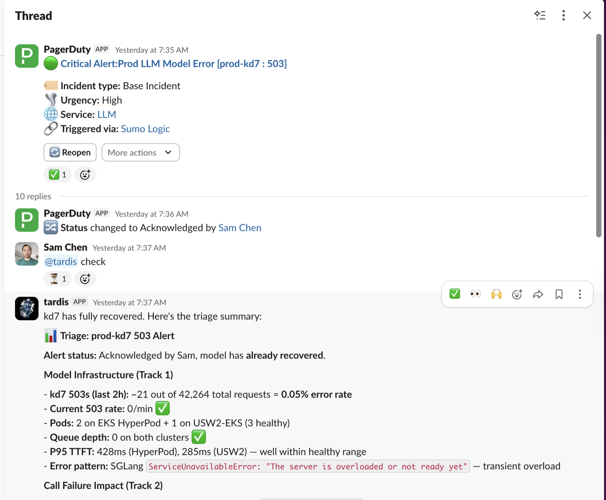

~1K lines in the loop · ~3.6K lines across 13 tool plugins · 15+ knowledge files · checkpointed to SQLite so pod restarts don't lose work.
#infra-owners; merges only after human review. Each incident makes Tardis smarter.+ Eval framework — 20 cases replay historical investigations and score tool selection, root-cause keywords, wrong-hypothesis avoidance. CI blocks regressions on every PR.
incoming_calls_accepting returned 503 for 2 patient calls.ERRORED aggregate against a Monday baseline of 273–340.find_all_utterances on a long-running VNS call — not CPU saturation.mandatory_investigation_rules.md (8 rules), call_failure_taxonomy.md, baseline_rates.md, Rule -1 for incident-time scoping, plus a regression eval case (PR c4efb25).
@tardis remember <topic>: <fact> — teach a team fact@tardis forget <topic> — removeSLACK_APPROVED_USERS — ask to be addedhai-agents#89 — ICE reference (19 patterns + infra + triage)knowledge/<platform>_reference.md, events/router.py, agent/loop.pyevals/cases/hai-agents#84 — add tundra to code_search (3-line PR)tools/ (auto-discovered)REPO_MAP + tool enumagents/tardis/tip/TARDIS_AUTOIMPROVE_TIP-V1.md
Local dev: clone hai-agents · cd agents/tardis · uv sync --extra dev · uv run uvicorn server:app · uv run python -m evals.runner --mode offline --case <name> before pushing.
ENABLE_PROMPT_CACHE + 1M_CONTEXT + EXTENDED_THINKING in eval → prodpast_rcas into semantic recall · supersession semanticsask_human